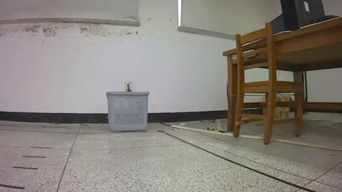
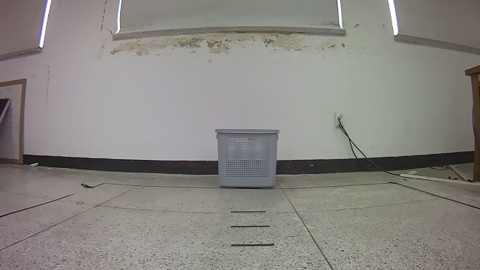
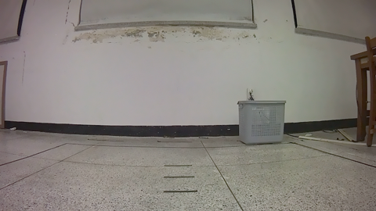

← 연구 히스토리로
🧠 Hidden State Action Head Hub
PG2 hidden state로 action head를 재학습하는 실험 전체(CH39~43)를 한 페이지에 모았다.
probe 검증 → 실패(착시 발견·정정) → 원인 진단(그라운딩) → 재시도(차원축소) → 성공, 까지의 전체 흐름.
0 핵심 결론 한눈에
| 단계 | 챕터 | 결론 | 수치 |
|---|
| 1. 신호가 있는가? | CH39 Step B | 예 — frozen probe로 방향 신호 확인 | 90.0~99.1% |
| 2. 원시 그대로 쓰면? | CH40 | 아니오 — 처음엔 +13%p로 보였으나 비교 오류, 정정 후 효과 없음 | 89.76% vs 89.17%/87.80% |
| 3. 왜 안 됐나? | CH41 | 그라운딩 품질이 더 강한 factor — has_bbox=False 오류율 3~5배 | 7%→40% |
| 4. 텍스트 명령은? | CH42 | 거짓 prompt도 이미지 신호를 못 흔듦 — 명령은 안 통함 | 89.5~92.3% 안정 |
| 5. 차원을 줄이면? | CH43 | 예 — proj_dim=32에서 baseline을 처음 넘음 | 94.29% (+2.75%p) |
표 전체가 "어떤 factor가 진짜 핵심인가"를 좁혀가는 과정 — head 구조보다 ① 그라운딩 품질 ② hidden state 차원이 더 강한 factor였다.
A 그라운딩 품질이 핵심이다 (CH41)
| 모드 | has_bbox=True 오류율 | has_bbox=False 오류율 | area(오류) | area(정답) |
|---|
| baseline | 7.4% | 40.0% | 0.151 | 0.308 |
| add(hidden 원시) | 10.7% | 20.0% | 0.243 | 0.303 |
| replace(hidden 원시) | 11.9% | 40.0% | 0.208 | 0.309 |

has_bbox=False → 오예측(FORWARD vs 정답 FWD+R)

area=0.027(작음) → 오예측(LEFT vs 정답 FORWARD)

area=0.605(큼) → 정답(FWD+L)
B "+13%p 개선"은 착시였다 — 정정 과정 (CH40)
| 비교 방식 | baseline | add | replace |
|---|
| 최초(옛 참고 수치로 비교) | 75.9% (하드코딩된 참고 문자열, 실측 아님) | 89.2% (+13.3%p) | 87.8% (+11.9%p) |
| 정정(같은 코드로 baseline 재학습) | 89.76% | 89.17% (-0.6%p) | 87.80% (-2.0%p) |
교훈: 새 변형을 비교할 땐 baseline도 반드시 같은 코드/같은 split으로 재측정해야 한다 — 옛 기록값을 그대로 쓰면 착시가 생긴다.
C 텍스트 명령 vs 이미지 신호 (CH42)
| probe | 길이 다름(42-1) | 길이 동일(42-2) |
|---|
| 이미지 방향 vs P0(중립) | 90.0% | 90.0% |
| 이미지 방향 vs P1("left"로 고정) | 92.3% | 89.5% |
| 이미지 방향 vs P2("right"로 고정) | 91.8% | 90.5% |
| prompt 종류 자체 구분 | 99.2% | 99.5% |
prompt가 거짓 방향을 우겨도 이미지 신호 인식은 89~92%로 안정 — "무엇을 보는가"는 이미지가 결정, "어느 쪽으로 가라"는 명령은 안 통함(CH38-5와 일치).
D 차원축소 + head ablation — 14개 조합 (CH43)
D-1. Projection 차원 ablation (head=mlp 고정)
| proj_dim | add | replace |
|---|
| 32 | 94.29% | 93.31% |
| 64 | 91.34% | 91.34% |
| 128 | 90.35% | 90.35% |
| 256 | 89.76% | 88.58% |
D-2. Head 구조 ablation (proj_dim=32 고정)
| head | add | replace |
|---|
| linear | 91.34% | 90.55% |
| mlp | 93.70% | 92.72% |
| fc | 93.90% | 94.09% ← 최고 |
기준선(window=8, bbox+image만): 91.54%. proj_dim이 작을수록(32) 일관되게 좋고, 14개 조합 중 다수가 기준선을 +2~3%p 상회.
E 종합 — 어떤 factor가 진짜 핵심인가
- 그라운딩 품질 — 가장 강한 단일 factor. has_bbox 유무로 오류율 3~5배 차이(CH41).
- hidden state 차원 — 2304차원 원시값은 오히려 해롭고, 32차원으로 줄이면 baseline을 넘김(CH43-1).
- head 구조 — FC가 근소 우위지만 차원축소보다 영향이 작음(CH43-2).
- 텍스트 명령(prompt) — 거의 영향 없음, 이미지 신호가 항상 압도(CH42).
다음 단계: proj_dim을 16/8까지 더 줄여 한계 탐색, fc+replace+proj32 조합 closed-loop 평가, CH41 그라운딩 개선과 병행 진행.